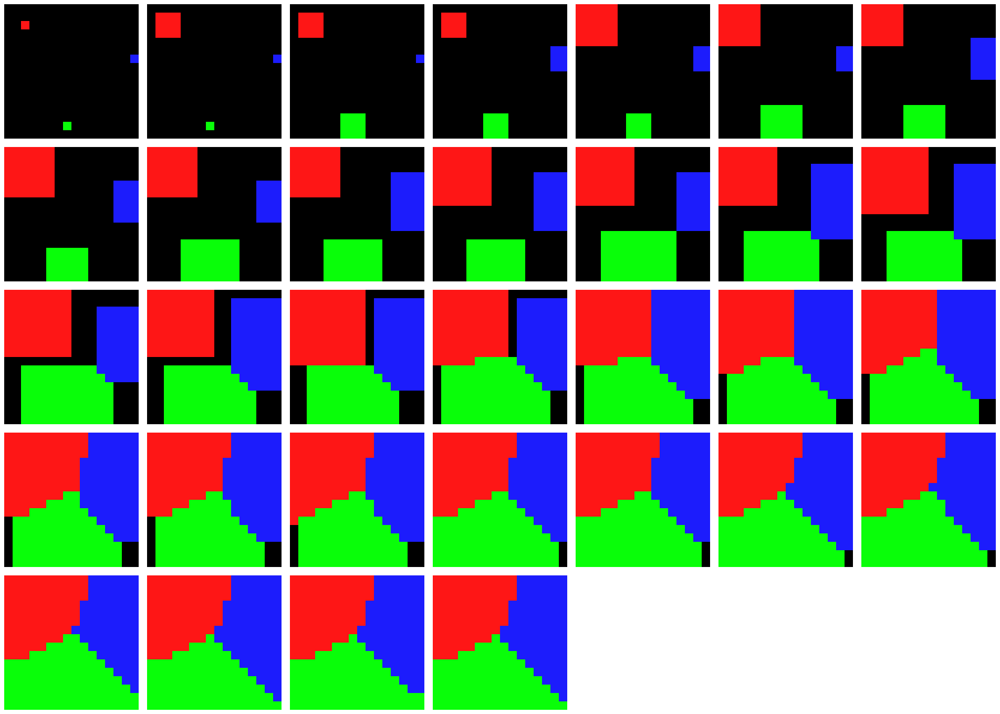
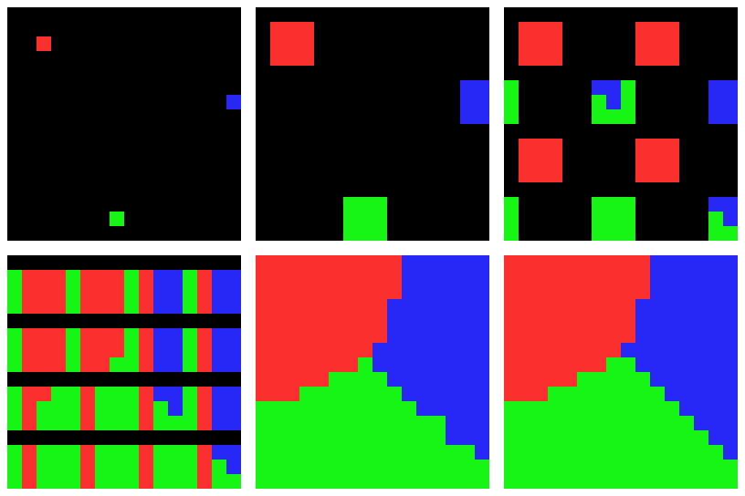

Voronoi diagram is a partition of a multi dimension space into regions based on distance to points in a specific subset of the space. The set of points (also called seeds, sites, or generators) is specified beforehand, and for each point there is a coresponding space region with the property that all the points in that region is closer to it’s seed than to any other. This regions are called Voronoi cells.
Most general space used for Voronoi diagrams it’s the 2D space, having multiple applications in various domains.
The application space dimension it’s the space with the constrains that x is an integer in [0, X ] and y is an integer in [0, Y ]
An image representing the Voronoi diagram, using as distancefunction the euclidian distance.
*also for debug purpose(and maybe easy comparison of results between different implementations) there might be an aditional output file.
For the sequence implementation I choose to use the classic flood fill algorithm. The ideea of this algorithm is we put the seeds in a queue, and while there are elements in the queue. we take the first element from the queue(will name it
current element
), go to it’s neighbours (if the
current element
is at
Example of the sequence implementaion:

For the multithreading implementation I choose to use a modified version of Jump Flooding Algorithm (aka JFA). This algorithm it’s somehow simmilar with the classical flood fill algorithm, but has much better performance, because was design to be used on GPUs and that’s why this implementation is a modified version of JFA. The ideea behind JFA is that instead of going to the neighbourn elements (the distance between
current element
and
next element
is 1), we choose the
next element
in the following way: for each
current element
at
To do this in a multithreading way, there will be n work jobs , each work job having an associated seed. For every work job we apply the JFA algorithm explain above. These work jobs will run on a differents threads assigned from a thread pool wich will have a size equal with the number of logical proccesors. This means that the work jobs will run asynchronous. Because each time we do a flood we need to be sure that all the work job are at the same value of k we will have a barrier with will synchronize the work jobs . In addition of this we need to make sure that there will not be a race condition between threads when 2 or more threads want to modify the same element. To prevent this race condition, each element will be guarded by a mutex.
Input: - Matrix s[0..X][0..X] shared memory(space matrix)
- Tile s(seed position)
- int k (step size)
Output: updated matix space
local queue q1,q2
local bool done = false
q1.push(s)
while(!done):
while(!q1.empty()):
Tile c_t = q1.pop()
for Tile t in next_tiles(c_t):
if update(t, c_t):
q2.push(t)
q1 = q2
barrier() | <-- wait for all threads here
done = next_step(k) | <-- only one thread will update k
Example of the multithread implementaion:
